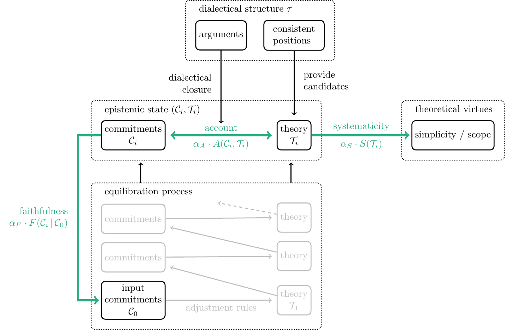
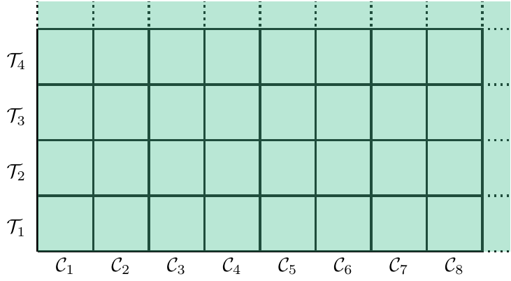
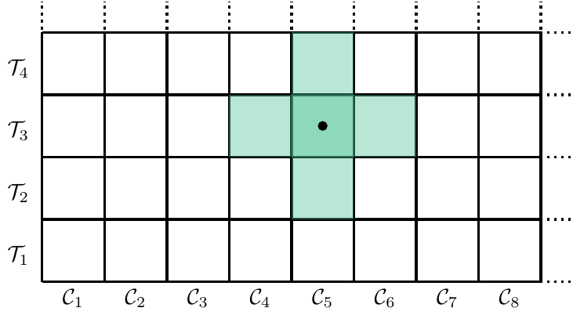
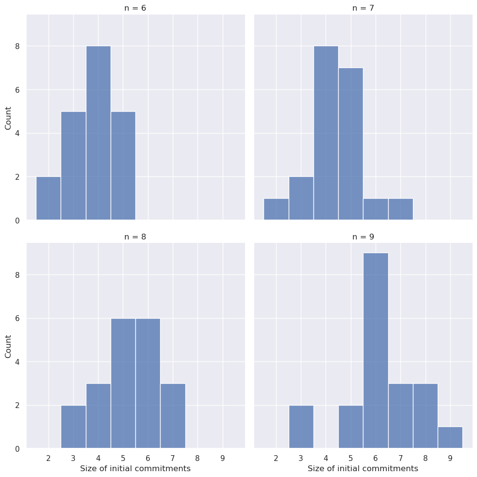
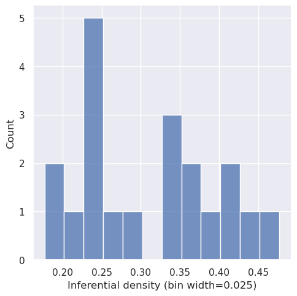
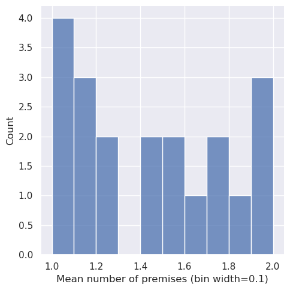

1 Introduction
So far, analysis results in this chapter are based but on a subset of the whole data set.
Beisbart, Betz, and Brun (2021) introduced a formal model of reflective equilibrium based on the theory of dialectical structures (Betz 2010, 2013), which they use as a methodological tool to better understand the method of reflective equilibrium and to assess its potential to yield justified epistemic states. Their discussion of the model is mainly based on an illustrative example. An assessment of how the model behaves under a broader spectrum of circumstances went beyond the scope of their work.
This report summarizes the findings of assessing the RE model more thoroughly by running the model under a wide range of configurations and by tweaking the original model. We compare simulation outcomes of three model variants to the ones of the original model.1
1.1 Modelling reflective equilibration
Reflective equilibrium is commonly understood as a method of justification, in which an epistemic subject iteratively adjusts its epistemic state in a process of equilibration until a state of reflective equilibrium is reached. In this final state, the agent’s belief system is supposed to be justified to the extent that it satifies various pragmatic-epistemc objectives, e.g., (internal) coherence.
Beisbart, Betz, and Brun (2021) model this process of reflective equilibration and the underlying axiology of equilibrium states in the following way.2
The agent’s epistemic state is modelled as a tuple \((\mathcal{C}, \mathcal{T})\), which comprises their accepted commitments \(\mathcal{C}\) and a theory \(\mathcal{T}\). Both are represented by sets of sentences from a finite pool of sentences \(S\), which is closed under negation.
The equilibration process is modelled as a mutual adjustment of the theory and the agent’s commitments to improve the epistemic state as measured by an achievement function \(Z\) (see Figure Figure 1.1). The agent starts with a set of initial commitments \(\mathcal{C}_0\). Then, a theory \(\mathcal{T}_0\) is chosen that systematizes \(\mathcal{C}_0\). This initial state \((\mathcal{C}_0, \mathcal{T}_0)\) is then adjusted by searching for a new set of commitments that performs better in terms of the overall achievement \(Z\). This process of adjusting the current epistemic state by choosing a new theory (or new commitments, respectively) goes on until no further improvement is gained any more.

The achievement function \(Z\) models the underlying axiology and is based on the three different desiderata faithfulness, systematicity and account. Their role is illustrated by bold arrows in Figure Figure 1.1.3
The desideratum of faithfulness demands that current commitments should not deviate too much from the initial commitments \(\mathcal{C}_{0}\). There are two motivations for this constraint (Beisbart, Betz, and Brun 2021, 447). A resemblance of the current commitments to \(\mathcal{C}_{0}\) contributes to the justification of the resulting state to the extent that initial commitments have some independent credibility. Additionally, the sentences in \(\mathcal{C}_{0}\) represent a specification of the topic under consideration. Deviating too much from \(\mathcal{C}_{0}\) courts the danger of changing the topic. Faithfulness \(F(\mathcal{C}\,\vert\, \mathcal{C}_{0})\) is operationalized in the model by measuring the distance of the current commitments to the initial commitments.4
The role of the theory \(\mathcal{T}\) is to systematize the commitments \(\mathcal{C}\). One suggestion to explicate this idea is to ask whether the theory implies the commitments. The account \(A(\mathcal{C}, \mathcal{T})\) measures how well the commitments \(\mathcal{C}\) fit to what is implied by the theory \(\mathcal{T}\). More specifically, \(A(\mathcal{C}, T)\) is based on measuring the distance between \(\mathcal{C}\) and the set of \(\mathcal{T}\)’s implications.
To that end, we need to know how the sentences in \(S\) are inferentially connected. The inferential relationships are modelled by dialectical structures based on the theory of dialectical structures (Betz 2010, 2013). A dialectical structure \(\tau\) is a set of deductively valid arguments \(\mathcal{A}\) and their “inferential” relationships to each other. For instance, an argument with two premises \(s_i, s_j\) (\(\in \mathcal{S}\)) and a conclusion \(S_k\) represents the inferential relationship of \(S_k\) being implied by the conjunction of \(s_i\) and \(s_j\).5 Each process of reflective equilibration takes place on the background of one dialectical structure that stays fixed during the process.
The final desideratum demands that a theory does not only perform well in systematizing the commitments \(\mathcal{C}\) but is generally able to systematize sentences in \(S\) (independent of whether they belong to the agent’s epistemic state). Systematicity \(S(\mathcal{T})\) measures this general inferential potential by considering the amount of \(\mathcal{T}\)’s implications in relation to the size of the sentence pool \(\mathcal{S}\).
All three desiderata can “pull” in different directions. The resolution of such trade-offs is modelled by using a convex combination of the three measures as a one-dimensional combined measure \(Z\) for the overall epistemic quality of the agent’s epistemic state:
\[ Z(\mathcal{C}, \mathcal{T}\, \vert\, \mathcal{C}_0) = \alpha_{A}\cdot A(\mathcal{C}, \mathcal{T}) + \alpha_{S}\cdot S(\mathcal{T}) + \alpha_{F}\cdot F(\mathcal{C}\,\vert\, \mathcal{C}_0), \]
The weights \(\alpha_{A}\), \(\alpha_{S}\) and \(\alpha_{F}\) are real-valued numbers between \(0\) and \(1\) that sum up to \(1\). Different suggestions for balancing the desiderata are represented by choosing different \(\alpha\)-weights in the achievement function \(Z\).
The achievement function assigns to every epistemic state \((\mathcal{C}, T)\) a value of “overall betterness” relative to what we can call an epistemic situation of an agent, i.e., a dialectical structure \(\tau\), a set of initial commitments \(\mathcal{C}_0\), and a configuration of weights \((\alpha_{A}, \alpha_{S}, \alpha_{F}\)). The epistemic situation captures the subject matter of inquiry, its background, and decisions to handle trade-offs between epistemic desiderata.
1.2 Model variations
In this report, we compare the performance of four model variants that result from a combination of two independent alterations of the original model from Beisbart, Betz, and Brun (2021) (see Table 1.1). First, we will vary the general shape of the functions \(A\), \(S\) and \(F\). In the original model, these functions have a quadratic form, which will be contrasted with a linear form. Second, we will compare the semi-global optimization during equilibrations steps, which is used in Beisbart, Betz, and Brun (2021), with a locally optimizing model variant.
| Quadratic shape | Linear shape | |
|---|---|---|
| Global optimization | QuadraticGlobalRE (in short, QGRE) |
LinearGlobalRE (in short, LGRE) |
| Local optimization | QuadraticLocalRE (in short, QLRE) |
LinearLocalRE (in short, LLRE) |
1.2.1 Quadratic and Linear Measures
In Beisbart, Betz, and Brun (2021), the functions \(A\), \(F\) and \(S\) have the following shape:
\[ G(x)= 1-x^2 \]
However, the quadratic term \(x^2\) is not motivated. The linear models LGRE and LLRE will be based on \(G(x)= 1-x\) to examine the repercussions of such a variation.
1.2.2 Semi-globally and locally optimizing equilibration processes
The mutual adjustment of commitments and theories involves two types of revisions. The agent will revise their current commitments \(\mathcal{C}_i\) and their current theory \(\mathcal{T}_i\) in an alternating fashion. More specifically, when adjusting their commitments, the agent will search for new commitments \(\mathcal{C}_{i+1}\) such that the resulting state \((\mathcal{C}_{i+1}, \mathcal{T}_i)\) performs better w.r.t. \(Z\). Similarly, when adjusting their theory, the agent will search for a theory \(\mathcal{T}_{i+1}\) such that \(Z(\mathcal{C}_{i}, \mathcal{T}_{i+1}\,\vert\, \mathcal{C}_0)> Z(\mathcal{C}_{i}, \mathcal{T}_{i}\,\vert\, \mathcal{C}_0)\).
The equilibration process in Beisbart, Betz, and Brun (2021) is a semi-global optimization in the following way: When searching for new commitments \(\mathcal{C}_{i+1}\) that improve \(Z\), the agent can choose any set of commitments. Similarly, when searching for a new theory \(\mathcal{T}_{i+1}\), the agents can choose any theory. This search strategy is computationally costly as the search space grows exponentially with the size of the sentence pool. For the same reason, it is also an unrealistic assumption about real epistemic subjects.
To solve this problem and incorporate some form of bounded rationality into the model, we can constrain the search space for adopting new commitments and theories. Instead of considering all commitments and theories, a locally optimizing equilibration process confines the search space to a neighbourhood of the current state.
The definition of this neighbourhood is based on an edit distance, which measures the number of changes needed to transform one set of sentences into another. Suppose the sentence pool \(\mathcal{S}\) comprise three sentences and their negations—that is, \(S=\{s_1,s_3,s_3,\neg s_1, \neg s_2, \neg s_3\}\). Let us now consider two different sets of commitments: \(\mathcal{C}_1=\{s_1, \neg s_2\}\) and \(\mathcal{C}_2=\{s_1,s_2,s_3\}\). Suppose further that an agent adopts \(\mathcal{C}_1\) as their commitments. In other words, they accept \(s_1\), refuse \(s_2\) and are indifferent towards \(s_3\). Consequently, a set of commitments can be specified by describing the doxastic attitude (acceptance, refusal and indifference) towards each sentence of half the sentence pool (\(s_1\), \(s_2\) and \(s_3\) in our example). The edit distance we use is defined by asking how many changes of doxastic attitudes are needed to transform one set of commitments into another. Consequently, the edit distance between \(\mathcal{C}_1\) and \(\mathcal{C}_2\) is \(2\) since we would have to change the attitude for \(s_2\) from refusal to acceptance and for \(s_3\) from indifference to acceptance.
We can now define the neighbourhood of depth \(d\) (in short, the \(d\)-neighbourhood) of a set of sentences \(S_i\) as the set of all sentence sets that have at most an edit distance of \(d\) to \(S_i\).6
The local model variants QLRE and LLRE restrict the commitments and theory candidates during adjustment steps to a neighbourhood of depth \(d=1\).
To illustrate the difference between global, semi-global and local optimization, think of epistemic states \((C, T)\) as cells on an appropriately sized, possibly non-square, chess board.7 The unbounded, globally optimizing agent can overview the entire board at once (Figure 1.2), while a semi-globally optimizing agent can evaluate only a single row or column per adjustment step (Figure 1.3). Finally, only candidates from a small neighbourhood of the current position are available to the locally optimizing agent only during an adjustment step (Figure Figure 1.4).



1.3 Metrics for model validations
At the outset, a plethora of metrics could be used to examine the performance of the formal model. Let us motivate a small selection of desiderata for model validation, which we will use in the following chapters.
The process of reflective equilibration reaches an endpoint, a so-called fixed point, if the agent arrives at an epistemic state that cannot be further improved (in terms of the achievement function) by revising their commitments or their theory, respectively (Beisbart, Betz, and Brun 2021, 450). However, such a fixed point is not necessarily a global optimum. In other words, other epistemic states might perform better w.r.t. \(Z\).
This possible divergence of fixed points and global optima applies to locally optimizing models (LLRE and QLRE) and the semi-globally optimizing models (LGRE and QGRE). The former can get stuck in local optima since they are confined to a restricted search area for the improvement of epistemic states. However, the semi-globally optimizing models can also get stuck in local optima since they do not adjust their commitments and theories simultaneously but alternately. Consequently, there is a conceptual delineation between the axiology (as defined by the achievement function) as a static aspect of RE and the equilibration process as the dynamical aspect of RE.8
Accordingly, several questions concerning the relationship between fixed points and global optima are relevant to the performance assessment of the model variants. In Chapter 3, we investigate whether fixed points are global optima and, conversely, whether global optima are reachable by equilibration processes.
The reached achievement of fixed points and global optima is not the only evaluative perspective on epistemic states. In other words, there are other aspects of evaluating reflective equilibria besides the desiderata of account, systemticity and faithfulness (Beisbart, Betz, and Brun 2021, 448–49).
The most ambitious requirement demands that a theory accounts fully and exclusively for the commitments of an epistemic state. Fixed points that are global optima and that additionally satisfy this criterion are called full RE states. In Chapter 4, we investigate whether and under which circumstances fixed points are full RE states. We will also analyze whether theories of global optima fully and exclusively account for their commitments.
Weaker requirements demand that fixed points or, at least, fixed point commitments are dialectically consistent—that is, consistent with respect to all inferential relationships encoded in the given dialectical structure \(\tau\). Consistency is commonly seen as a necessary condition of coherence. Achieving consistency is, therefore, of utmost importance for equilibration processes. In Chapter 5, we will assess the consistency conduciveness of the different model variants.
Finally, we will investigate whether global optima and fixed points yield extreme values in the normalized measures \(A\), \(F\) and \(S\) (Chapter 6). The achievement function \(Z\) aggregates these measures by using weights to model trade-offs between the desiderate (e.g., give up on faithfulness to increase account). Investigating under which circumstances extreme values are achieved in \(A\), \(F\), and \(S\) might improve our understanding of the involved trade-offs and of the consequences of choosing specific weights.
1.4 Ensemble description
The results of RE processes and their global optima depend on the following inputs:
- the model variant,
- the dialectical structure \(\tau\) and the sentence pool,
- the \(\alpha\)-weights for the achievement function and
- the set of initial commitments
Let us call a specification of these inputs a simulation setup.
Due to the exponential growth of candidate commitments and theories, which all have to be considered for global optima and semi-global adjustment steps in RE processes, the ensemble includes only four sentence pools with a small number of sentences (\(12\), \(14\) , \(16\), \(18\)). We generated \(50\) dialectical structures and \(20\) sets of random initial commitments for each sentence pool. We used every resulting configuration of dialectical structures and initial commitments (out of \(4\,000=4\cdot 50 \cdot 20\) configurations) to run RE processes for every of the described model variants and for \(36\) \(\alpha\)-weight configurations.
For each of the resulting \(576\,000\) simulation setups, we calculated global optima. Note also that one simulation setup does not necessarily determine a fixed point uniquely. For every step of adjusting a theory (or a set of commitments), the subsequent theory (or set of commitments) is underdetermined if there is more than one candidate that maximizes the achievement function. In such cases, the model will randomly choose the next theory (or set of commitments) (Beisbart, Betz, and Brun 2021, 466). The Python implementation of the model allows us to track each of the resulting branches, which we did for this report.
However, for some simulation setups (\(XXX\)), we do not have simulation results. Due to reasons of computational feasibility, we had to set a cut-off point for the number of branches per simulation setup and the number of adjustment steps.9 We chose to limit the number of branches to \(400\) and set the maximum number of adjustment steps to \(100\). Given these restrictions, the resulting ensemble comprises \(XXX\) branches.
| Setups | Model variants | Sentence pool sizes | Dialectical structures | Initial commitments | \(\alpha\)-weights (resolution) |
|---|---|---|---|---|---|
| \(576\,000\) | \(4\) | \(12\), \(14\), \(16\), \(18\) | \(4*50\) | \(4*20\) | \(36\) (\(0.1\)) |
Let us now describe the simulation setups more thoroughly.
1.4.1 \(\alpha\)-weights
Each \(\alpha\)-weight was varied between \(0.1\) and \(0.8\) in steps of \(0.1\) (i.e., values from \(0.1, 0.2, \dots, 0.8\)). Since \(\alpha\)-weights have to satisfy \(\alpha_{A} + \alpha_{S} + \alpha_{F} = 1\), there are \(36\) possible combinations of the described \(\alpha\)-weights.
We excluded extreme values such as \(\alpha_{F} = 0\) or \(\alpha_{A} = 1\) since they “break” the model and lead to undesirable behaviour. For example, \(\alpha_{F} = 0\) results in global optima that comprise all and only singleton theories and their closures as commitments.
1.4.2 Initial commitments
We generated a simple random sample of \(20\) sets of minimally consistent initial commitments for every sentence pool. While we allow initial commitments to be dialectically inconsistent—that is, inconsistent w.r.t. the inferential relationships codified in \(\tau\)— they must be minimally consistent. In other words, they should not include flat contradictions (e.g., \(\{s_1,s_2,\neg s_1\}\)).
Let \(2^\mathcal{S}\) be the set of all sets of minimally consistent sets of sentences from \(\mathcal{S}\).10 If \(2n\) is the size of the sentence pool, then there are \(3^{n}\) minimally consistent sets of sentences (\(\vert 2^\mathcal{S} \vert = 3^{n}\)). For the generation of the used random sample, every set of commitments has the same probability of being drawn. Note that this does not translate into a uniform distribution of the number of initial commitments since the amount of sets with a specific size varies in \(2^\mathcal{S}\). In Figure 1.5, you find the actual distribution of the initial commitments’ sizes for the different sentence pools.

Roughly, \(56\%\) [XXX] of the random initial commitments are dialectically consistent. This value varies slightly depending on the sentence pool (see Figure 1.6).

1.4.3 Dialectical structures
We generated \(50\) random dialectical structures for each sentence pool, which codify all inferential relationships on which an RE process is based. A dialectical structure comprises arguments with an internal premise-conclusion structure and dialectical relationships between arguments. Arguments can attack or support each other (see Figure 1.7 for an example).11

Inferential relationships are represented in a dialectical structure \(\tau\) in the following way: If the sentences \(P=\{s_ {i_1},s_{i_2},\dots, s_{i_m}\}\) are premises of an argument in \(\tau\) and \(s_j\) is its conclusion, \(s_j\) is (known to be) implied by \(P\). If an argument \(A\) supports another argument \(B\), the conclusion of \(A\) is (known to be) equivalent to a premise of \(B\); if an argument \(A\) attacks another argument \(B\), the conclusion of \(A\) is (known to be) inconsistent with a premise of \(B\).
The inferential density of a dialectical structure \(\tau\) “can be understood as measure of the inferential constraints encoded in \(\tau\)” (Betz 2013, 44) and is defined as \[ D(\tau) = \frac{n-lg(\sigma)}{n} \]
where \(2n\) is the size sentence pool and \(\sigma\) the number of complete and consistent positions in \(\tau\)
The \(\tau\)-generating algorithm we used receives the following parameters as constraints:
- the size of the sentence pool (\(n\in \{6,7,8,9\}\)),
- an interval for the permissible number of arguments (\(I_{\vert\tau\vert}=[n-2,n+2]\)),
- the maximum number of premises per argument (\(P_{n_{max}}=2\)),
- probability weights for the number of premises for arguments (i.e., weights for each \(1,\dots, P_{n_{max}}\)) and
- an interval for the permissible inferential density (\(I_D=[0.15,0.5]\))
The algorithm will generate a dialectical structure by randomly constructing arguments so that the number of arguments and the inferential density fall in the specified intervals \(I_{\vert\tau\vert}\) and \(I_D\). Both properties correlate inversely: Roughly, the more arguments \(\tau\) has, the higher its inferential density.
Besides the specified parameters, the algorithm will satisfy the following constraints:
- The dialectical structure is satisfiable (i.e., there is at least one dialectically consistent position on \(\tau\)).
- Every sentence will be used. In other words, for every sentence \(s\in \mathcal{S}\), there is an argument in \(\tau\) such that \(s\) or \(\neg s\) is either a premise or the conclusion of the argument.
- Arguments are not question-begging (i.e., an argument’s conclusion is not in its premise set).
- Arguments are not attack-reflexive (i.e., the negation of an argument’s conclusion is not in its premise set).
Figure 1.8 plots the actual distribution of inferential densities in the generated data set of all \(200\) dialectical structures.

All generated dialectical structures have arguments with \(1\)-\(2\) premises. For each sentence pool, we used five sets of weights for the number of premises such that there are \(10\) dialectical structure with an expected number of premises \(E(\vert P_\tau \vert)\) of \(1\), \(10\) with \(E(\vert P_\tau \vert)=1.25\), \(10\) with \(E(\vert P_\tau \vert)=1.5\), \(10\) with \(E(\vert P_\tau \vert)=1.75\) and \(10\) with \(E(\vert P_\tau \vert)=2\). The resulting actual distribution of the mean number of premises per argument can be seen in Figure 1.9. The increased amount of \(\tau\)s with only \(1\) and \(2\)-premise arguments results from ceiling effects since all arguments have at least one and at most two premises.

1.5 Summary of results
to come …
The results of Beisbart, Betz, and Brun (2021) are based on a Mathematica implementation of the model (see https://github.com/debatelab/remoma). Here, we rely on a reimplementation in Python (rethon), which can reproduce the results of the original implementation (see this notebook).↩︎
For a thorough and complete description of the formal RE model, see Beisbart, Betz, and Brun (2021). The present section is based on condensed material from Freivogel (2023).↩︎
For formal details of all measures, see (Beisbart, Betz, and Brun 2021, 464–66).↩︎
The used distance is a weighted Hamming distance. For details, see Beisbart, Betz, and Brun (2021), 465.↩︎
The arguments of a dialectical structure \(\tau\) need not be formally valid, but can include “arguments that are valid given the relevant background theories” (Beisbart, Betz, and Brun 2021, 460). Additionally, \(\tau\) does not need to codify all inferential relationships between sentences in \(S\) and can, in this way, model some form of bounded rationality.↩︎
For a sentence pool size of \(2n\), the number of positions in the neighbourhood of a position is \(\sum_{k=0}^{d} \binom{n}{k} \cdot 2^k,\) where \(d\) denotes the neighbourhood depth. For \(d = 1\), the number of positions in the neighbourhood grows linearly with the number of sentences. More specifically, for \(d=1\), the size of the neighbourhood is \(2n + 1\).↩︎
Note that the two-dimensional representation of the epistemic states in the subsequent figures is purely illustrative. There is no inherent linear order among positions, which can be understood as points in an \(n\)-dimensional discrete space.↩︎
The fact that the model allows distinguishing static and dynamic aspects makes the model a fruitful foil to discuss the broader epistemological questions surrounding the method of reflective equilibrium (Beisbart, Betz, and Brun 2021, 457–58).↩︎
The models will always converge within a finite number of steps into a fixed point (see Beisbart, Betz, and Brun 2021, 467). The same could be shown for the number of branches. However, the number of branches and the length of processes can still be computationally challenging.↩︎
\(2^\mathcal{S}\) is a subset of the powerset of \(\mathcal{S}\), which is usually denoted by \(2^\mathcal{S}\).↩︎
The illustrated dialectical structure is one from the actual data set (with the name
tau-alpha-020). Argument maps of all used dialectical structures can be found here XXX.↩︎